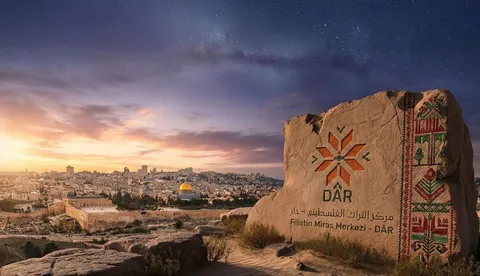
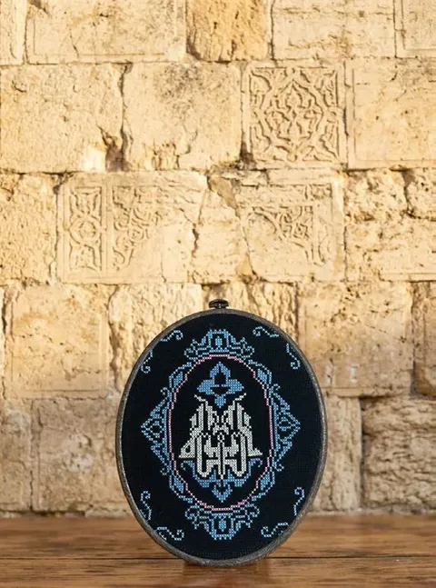
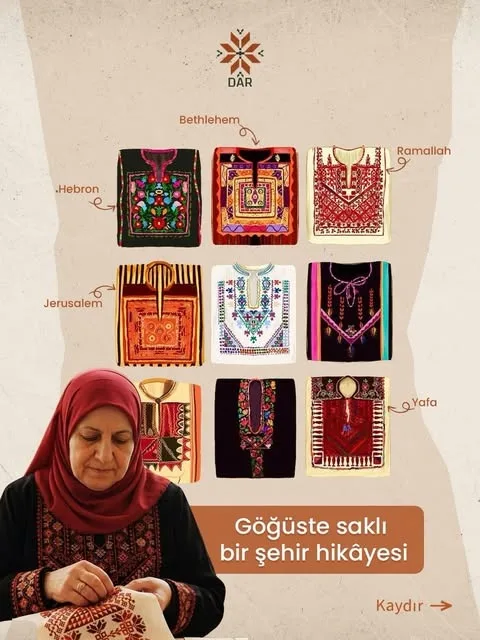
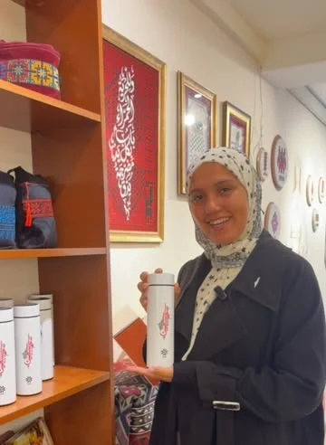
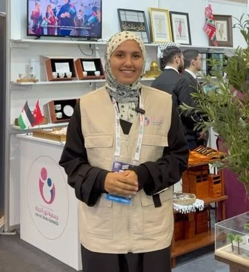

الدار
هي البيت
في اللهجة الفلسطينية، الدار هي البيت. ومن هنا جاء اسمنا: بيت في إسطنبول يحفظ الثقافة والتقاليد الفلسطينية، ويفتح بابه لكل من يريد أن يعرفها.

لا نعرض التراث الفلسطيني فحسب، بل نعيده إلى الحياة اليومية قيمة ثقافية وجمالية وإنسانية.
ما نعمل لأجله
- 01دعم الحرفيات والحرفيين الفلسطينيينعمل يدوي يصل إلى من يقدره، ويعود بدخل على من صنعه.
- 02تراث بمعايير جودة معاصرةنقوش تقليدية في قطع تصلح لحياة اليوم.
- 03إحياء الذاكرة الثقافية بالإنتاجكل قطعة جديدة تحفظ نقشة قديمة من الضياع.
- 04تراث يعيشه الأفراد والمؤسساتللبيت وللهدية وللمناسبة الرسمية.
- 05جسور بين الثقافاتنبين ما يجمع الثقافة الفلسطينية بالثقافات الأخرى.
- 06تمكين المرأة الفلسطينية اقتصادياكثير من قطعنا من صنع نساء في مناطق النزاع، وخاصة غزة.
من يد فلسطينية إلى بيتك
- تطرزها يد فلسطينية
نساء فلسطينيات، كثير منهن في مناطق النزاع وخاصة غزة، يطرزن القطع بنقوش قرى فلسطين ومدنها.
- تصل إلى دار
نجمع القطع في مركزنا في إسطنبول، ونعرضها، ونحكي قصة كل نقشة.
- تصل إليك
قطعة لبيتك، أو هدية لمن تحب، أو هوية لمناسبة مؤسستك.
- ويعود أثرها إلى غزة
عائد كل قطعة يدعم مشاريع في غزة، خاصة لتمكين النساء والأطفال.

وراء كل غرزة حكاية
مجموعة التطريز في دار مستوحاة من النقوش الأصيلة لقرى فلسطين ومدنها، ويصنعها كليا أو جزئيا حرفيون وحرفيات فلسطينيون مهرة.

من إنستغرام دارصدر الثوب يحكي مدينتهشاهد المنشورلكل من يحمل فلسطين في قلبه
تعال إلينا، أو نأتي إليك
يستقبل المركز زوارا من أنحاء العالم ليتعرفوا على الثقافة الفلسطينية وتراثها.


زورونا
Altın Sk. No:11/ABahçelievler, İstanbul
ونشارك في المعارض داخل تركيا، وآخرها معرض إسطنبول للكتاب العربي. وكل أسبوع نطرح سؤالا عن فلسطين على إنستغرام.
احمل قطعة من الحكاية
كل قطعة تحمل نقشة واسم مدينتها، وعائدها يعود إلى غزة.